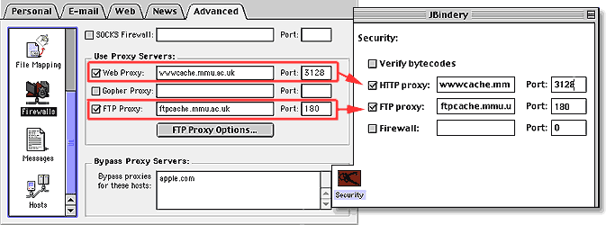

Legacy Document
Important: This document is part of the Legacy section of the ADC Reference Library. This information should not be used for new development.
Current information on this Reference Library topic can be found here:
ADC Home > Reference Library > Technical Q&As > Legacy Documents > Java >
Important: This document is part of the Legacy section of the ADC Reference Library. This information should not be used for new development.
Current information on this Reference Library topic can be found here:
|
|
Q: I have a Java application that needs to use a proxy server for connections to the Internet. How do I specify these settings in my application? A: Java networking classes use System properties to route network traffic through proxy servers. MRJ (version 2.2 or later) automatically uses the settings in the Internet Control panel to continually update the System properties. By far, the best thing to do is have the use the proxy information in the Internet Control panel. You can set these properties using JBindery, MRJAppBuilder, or programmatically, but you run the risk that MRJ will overwrite them. The image below illustrates how the Internet control panel settings map to those in JBindery: |

|
Here is a complete table of how these settings map:
The Proxy settings in the Internet Control Panel are accessible from the Firewall page of the Advanced tab. JBindery settings can be specified from the Security page. If you wish to configure your proxy settings programmatically, you need to use Java's standard property mechanism.
To modify your proxy settings using MRJAppBuilder, add the settings directly in your properties file. Here's an example:
For more information on system properties in Java, please visit Sun's web pages. For more information on MRJAppBuilder, see the document About MRJAppBuilder that ships with the MRJ 2.2 SDK in Tools:Application Builders:MRJAppBuilder. For more information on JBindery, consult About JBindery that ships with the MRJ 2.2 SDK (and earlier) in Tools:Application Builders:JBindery. [Apr 24 2000] |
|